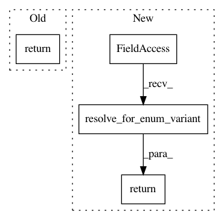

e382541d70c5b57e682dce998d361c96aed4d8e9,src/python/pants/backend/jvm/tasks/jvm_compile/rsc/rsc_compile.py,RscCompile,get_zinc_compiler_classpath,#RscCompile#,203
Before Change
// Overrides the normal zinc compiler classpath, which only contains zinc.
def get_zinc_compiler_classpath(self):
return self.do_for_execution_strategy_variant({
self.HERMETIC: lambda: super(RscCompile, self).get_zinc_compiler_classpath(),
self.SUBPROCESS: lambda: super(RscCompile, self).get_zinc_compiler_classpath(),
self.NAILGUN: lambda: self._nailgunnable_combined_classpath,
})
def register_extra_products_from_contexts(self, targets, compile_contexts):
super(RscCompile, self).register_extra_products_from_contexts(targets, compile_contexts)
def pathglob_for(filename):
After Change
// Overrides the normal zinc compiler classpath, which only contains zinc.
def get_zinc_compiler_classpath(self):
return self.execution_strategy_enum.resolve_for_enum_variant({
self.HERMETIC: lambda: super(RscCompile, self).get_zinc_compiler_classpath(),
self.SUBPROCESS: lambda: super(RscCompile, self).get_zinc_compiler_classpath(),
self.NAILGUN: lambda: self._nailgunnable_combined_classpath,
})()
def register_extra_products_from_contexts(self, targets, compile_contexts):
super(RscCompile, self).register_extra_products_from_contexts(targets, compile_contexts)
def pathglob_for(filename):
In pattern: SUPERPATTERN
Frequency: 3
Non-data size: 4
Instances
Project Name: pantsbuild/pants
Commit Name: e382541d70c5b57e682dce998d361c96aed4d8e9
Time: 2019-02-12
Author: 1305167+cosmicexplorer@users.noreply.github.com
File Name: src/python/pants/backend/jvm/tasks/jvm_compile/rsc/rsc_compile.py
Class Name: RscCompile
Method Name: get_zinc_compiler_classpath
Project Name: pantsbuild/pants
Commit Name: e382541d70c5b57e682dce998d361c96aed4d8e9
Time: 2019-02-12
Author: 1305167+cosmicexplorer@users.noreply.github.com
File Name: src/python/pants/backend/jvm/tasks/jvm_compile/rsc/rsc_compile.py
Class Name: RscCompile
Method Name: _runtool
Project Name: pantsbuild/pants
Commit Name: 16cefff6021e021ca2efc7d5845424a613c4c839
Time: 2019-03-15
Author: nh@baroquebobcat.com
File Name: src/python/pants/backend/jvm/tasks/jvm_compile/rsc/rsc_compile.py
Class Name: RscCompile
Method Name: _classify_compile_target